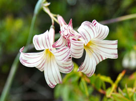
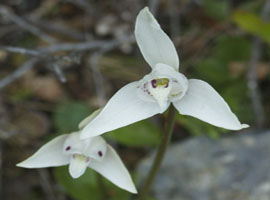
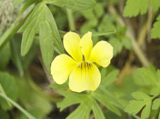

Se transitan ambientes de bosques nativos, con una vegetación abundante de Lenga (Nothofagus pumilio) y Ñire (Nothofagus antartica), también se observan plantas de matorral como Mata Negra (Junellia tridens sp.) y Calafate (Berberis buxifolia) entre otras especies del sotobosque y flores. También se destaca la diversidad de turberas, una verdadera representación de los ambientes de turba de toda Tierra del Fuego, si bien la comunidad vegetal predominante es la turbera de Sphagnum sp., es notable la presencia de mosaicos donde han colonizado otras especies tales como gramíneas, Carex sp, Marsippospermum grandiflorum y Tetrontium magellanicum.
Campanilla
Palomita
Violeta Amarilla